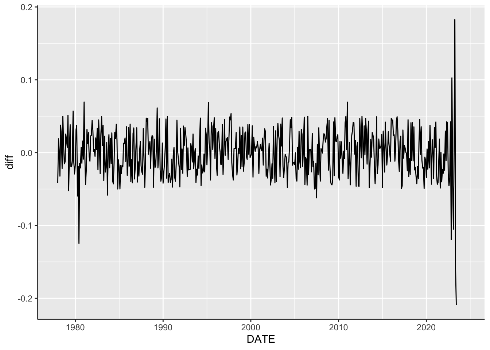

Chapter 21 Insights From Consumer Surveys
21.1 Introduction
The University of Michigan’s Survey of Consumers has been capturing the mood of U.S. households about the economy since the late 1940s. The monthly survey captures U.S. households’ views about the economy, providing essential insights into their perceptions and attitudes towards the U.S. economic landscape. The surveys play a significant role in shaping economic and policy decisions, given that consumer spending accounts for approximately 70% of the U.S. economy.
The University of Michigan combines the survey into three key indices: the Index of Consumer Sentiment (ICS), the Index of Current Economic Conditions (ICC), and the Index of Consumer Expectations (ICE). The ICS, frequently cited in newspapers, economic studies, and financial reports, provides a comprehensive view of consumer confidence every month. The ICC concentrates on consumer attitudes towards the current economic environment, while the ICE forecasts future economic conditions.
These famous consumer indices are based on just five out of the survey’s fifty questions. This chapter not only explains how the ICS, ICC, and ICE are made, but also looks at the rest of the survey data to create new consumer indices.
21.2 Conducting the Survey
Detailed information about the University of Michigan’s Surveys of Consumers is readily accessible on their official website at data.sca.isr.umich.edu. The survey information section of the website provides critical details about the survey process. This includes a thorough survey description, an overview of the sample design, and the actual questionnaire used in the survey. Below is some of the information summarized.
Sample Population
The Surveys of Consumers samples adults 18 years of age and older residing in households in the continental U.S. It’s designed to be a representative sample of all such households.
Sampling Method
The survey uses a rotating panel design, with a new panel of respondents each month, selected to reflect the demographic and geographic distribution of the U.S. population.
Data Collection
Telephone interviews are the primary mode of data collection, although they have been increasingly integrating web-based interviews in recent years. Interviews typically last about 15 minutes.
Survey Questions
The survey consists of approximately 50 core questions, and the rest of the questionnaire can vary depending on current economic events. The core questions elicit information on respondents’ financial situation, buying attitudes, and expectations about future economic conditions.
Survey Frequency and Timing
Starting from the late 1940s, the Surveys of Consumers were initially conducted quarterly. However, since the mid-1970s, the frequency has increased to monthly. Each month’s survey involves about 500 interviews, with roughly 50-60% completed by the 10th of the month. Preliminary results are released mid-month, with remaining interviews completed by month-end. Final results are published at the beginning of the following month.
21.3 Michigan Consumer Indices
21.3.1 Index of Consumer Sentiment (ICS)
The ICS is a composite index that captures consumers’ perceptions of their financial situation and attitudes about the economy in general. It is derived from five questions related to personal finances, general economic conditions, and purchasing conditions.
To calculate the Index of Consumer Sentiment (ICS), we first compute the relative scores for each of the five index questions (\(x_1,...,x_5\) listed below). The relative score is the percent of favorable replies minus the percent of unfavorable replies, with 100 added. Each relative score is then rounded to the nearest whole number. The ICS is calculated using the following formula:
\[ ICS = \frac{x_1+x_2+x_3+x_4+x_5}{6.7558} + 2.0 \]
The constant 2.0 is added to correct for sample design changes from the 1950s.
The ICS is derived from the responses to the following five questions:
\(x_1\) = PAGO_R: “We are interested in how people are getting along financially these days. Would you say that you (and your family living there) are better off or worse off financially than you were a year ago?”
\(x_2\) = PEXP_R: “Now looking ahead–do you think that a year from now you (and your family living there) will be better off financially, or worse off, or just about the same as now?”
\(x_3\) = BUS12_R: “Now turning to business conditions in the country as a whole–do you think that during the next twelve months we’ll have good times financially, or bad times, or what?”
\(x_4\) = BUS5_R: “Looking ahead, which would you say is more likely–that in the country as a whole we’ll have continuous good times during the next five years or so, or that we will have periods of widespread unemployment or depression, or what?”
\(x_5\) = DUR_R: “About the big things people buy for their homes–such as furniture, a refrigerator, stove, television, and things like that. Generally speaking, do you think now is a good or bad time for people to buy major household items?”
The responses to these questions are combined to create the indices. For each question, there are a certain number of points assigned for positive, neutral, and negative responses. After the responses are scored, they are combined to create each index. The indices are then normalized to a base year (currently 1966 = 100) to create the final index values.
21.3.2 Index of Current Economic Conditions (ICC)
The ICC specifically focuses on consumers’ perceptions of their current financial situation and whether it’s a good time to buy big-ticket items like cars and homes. It is based on responses to just two questions.
The ICC is constructed from questions 1 and 5 from the ICS list using the following formula: \[ ICC = \frac{x_1+x_5}{2.6424} + 2.0, \qquad \]
21.3.3 Index of Consumer Expectations (ICE)
The ICE aims to gauge consumer expectations for the future, specifically regarding their financial situation, general economic conditions, and purchasing conditions in the next year and next five years. It is derived from the remaining three questions.
The ICE is constructed from questions 2, 3, and 4 from the ICS list using the following formula: \[ ICE = \frac{x_2+x_3+x_4}{4.1134} + 2.0 \]
21.3.4 Importing in R
This chapter illustrates how to import the three consumer indices, in addition to a selection of time series, which include the five that form the ICS, ICE, and ICC. For detailed descriptions of these time series, please refer to the Time-Series Variable Codebook provided on the survey’s website.
In this chapter, we’ll demonstrate how to import a TSV file using real-world consumer survey data collected by the University of Michigan. This data is gathered through surveys that ask people about their opinions and feelings regarding the economy. It helps to understand how consumers perceive the current economic conditions and their expectations for the future. The data provides valuable insights into consumer behavior and helps economists, policymakers, and businesses make informed decisions.
To obtain the Michigan consumer survey data, follow these steps:
- Visit the website of University of Michigan’s surveys of consumers by clicking here.
- Click on “DATA” in the menu bar, then select “Time Series.”
- On the data page, under Table, select “All: All Tables (Tab-delimited or CSV only)” to obtain the consumer survey data on all topics.
- To access all the consumer survey data since 1978, type “1978” under the “Oldest Year” option.
- Click on “Tab-Deliminated (Excel)” under the “format” option.
- Save the TSV file in a location of your choice, ensuring that it is saved in a familiar folder for easy access.
The dataset contains 360 variables with coded column names such as ics_inc31 or pago_dk_all. To understand the meaning of these columns, you can visit the same website here and click on SURVEY INFORMATION. From there, select the Time-Series Variable Codebook which is a PDF document that provides detailed explanations for all the column names. By referring to this codebook, you can gain a better understanding of the variables and their corresponding meanings in the dataset.
21.3.5 Import TSV File
TSV (Tab Separated Values) is a common file format used to store tabular data. As the name suggests, the values in each row of a TSV file are separated by tabs. Here’s an example of how data is stored in a TSV file:
- Male 8 100 3
- Female 9 20 3
To import the consumer survey TSV file, you need to install and load the readr package if you haven’t done so already. Once the package is loaded, you can use either the read_tsv() or read_delim() function to read the TSV (Tab-Separated Values) file.
# Load the package
library("readr")
# Import TSV file
cs <- read_tsv(file = "files/sca-tableall-on-2023-Jul-01.tsv", skip = 1)
# Import TSV file using the read_delim() function
cs <- read_delim(file = "files/sca-tableall-on-2023-Jul-01.tsv", skip = 1,
col_names = TRUE, delim = "\t")In the provided code snippets, the file input specifies the file path or URL of the TSV file to be imported. The skip input is used to specify the number of rows to skip at the beginning of the file. In this case, skip = 1 indicates that the first line of the TSV file, which contains the title “All Tables”, should be skipped. The col_names input is set to TRUE to indicate that the second line of the TSV file (after skipping 1 row) contains the column names. Lastly, the delim input is set to "\t" to specify that the columns in the TSV file are separated by tabs, which is the standard delimiter for TSV (Tab Separated Values) files.
Note that if the file is neither CSV nor TSV, but rather has an exotic format where columns are separated by a different character that is neither a comma nor a tab, such as “/”, you can use the read_delim() function with the delim = "/" argument to specify the custom delimiter.
To inspect the first few rows of the data, print the cs object in the console. For an overview of the entire dataset, execute View(cs).
## # A tibble: 545 × 360
## Month yyyy ics_all ics_inc31 ics_inc32 ics_inc33 ics_a1834 ics_a3554
## <dbl> <dbl> <dbl> <dbl> <dbl> <dbl> <dbl> <dbl>
## 1 1 1978 83.7 NA NA NA 93.7 86.7
## 2 2 1978 84.3 NA NA NA 99.7 82.3
## 3 3 1978 78.8 NA NA NA 91.7 76.8
## 4 4 1978 81.6 NA NA NA 91.8 79.7
## 5 5 1978 82.9 NA NA NA 95.1 78.9
## 6 6 1978 80 NA NA NA 91.7 75.7
## 7 7 1978 82.4 NA NA NA 92.2 78.4
## 8 8 1978 78.4 NA NA NA 87.8 77.2
## 9 9 1978 80.4 NA NA NA 86.6 83.9
## 10 10 1978 79.3 NA NA NA 90.6 76.7
## # ℹ 535 more rows
## # ℹ 352 more variables: ics_a5597 <dbl>, ics_ne <dbl>, ics_nc <dbl>,
## # ics_s <dbl>, ics_w <dbl>, icc_all <dbl>, ice_all <dbl>, pago_f_all <dbl>,
## # pago_s_all <dbl>, pago_u_all <dbl>, pago_dk_all <dbl>, pago_r_all <dbl>,
## # pagorn_hy_all <dbl>, pagorn_ha_all <dbl>, pagorn_ld_all <dbl>,
## # pagorn_ly_all <dbl>, pagorn_hp_all <dbl>, pagorn_la_all <dbl>,
## # pagorn_hd_all <dbl>, pagorn_ny_all <dbl>, pagorn_nad_all <dbl>, …Use sapply(cs, class) to check the data type of each column, to make sure all columns are indeed numeric:
##
## logical numeric
## 1 359Here, since there are 360 columns, the summary() function is applied, which reveals that there are 359 numerical columns, and 1 logical column, which makes sense.
Instead of a date column, the consumer survey has a year (yyyy) and a month (Month) column. To create a date column from the year and month columns, combine them with the paste() function to create a date format of the form Year-Month-Day or %Y-%m-%d:
## [1] "1978-01-01" "1978-02-01" "1978-03-01" "1978-04-01" "1978-05-01"
## [6] "1978-06-01"21.3.6 Plotting Consumer Indices
The Michigan Consumer Survey consists of a wide range of survey responses from a sample of households collected every month. These survey responses are gathered to produce indices about how consumers feel each period. The University of Michigan produces three main indices: the Index of Consumer Confidence (ICC), the Index of Current Economic Conditions (ICE), and the Index of Consumer Sentiment (ICS). These indices are designed to measure different aspects of consumer attitudes and perceptions regarding the economy.
Index of Consumer Confidence (ICC): The ICC reflects consumers’ expectations about future economic conditions and their overall optimism or pessimism. It is based on consumers’ assessments of their future financial prospects, job availability, and economic outlook. A higher ICC value indicates greater consumer confidence and positive expectations for the economy.
Index of Current Economic Conditions (ICE): The ICE assesses consumers’ perceptions of the current economic environment. It reflects their evaluations of their personal financial situation, job security, and their perception of whether it is a good time to make major purchases. The ICE provides insights into the current economic conditions as perceived by consumers.
Index of Consumer Sentiment (ICS): The ICS combines both the ICC and ICE to provide an overall measure of consumer sentiment. It takes into account consumers’ expectations for the future as well as their assessment of the present economic conditions. The ICS is often used as an indicator of consumer behavior and their likelihood of making purchases and engaging in economic activities.
These indices are calculated based on survey responses from a sample of households, and they serve as important indicators of consumer sentiment and economic trends. They are widely followed by economists, policymakers, and financial markets as they provide valuable insights into consumers’ attitudes and perceptions, which can impact their spending behavior and overall economic activity.
Let’s use the plot() function to visualize the imported Michigan consumer survey data. In this case, we will plot the three key indices: ICC, ICE, and ICS over time, using the Date column as the x-axis and the three indices as the y-axis:
# Plot ICC, ICE, and ICS over time
plot(x = cs$Date, y = cs$icc_all, type = "l", col = 5, lwd = 3, ylim = c(40, 140),
xlab = "Date", ylab = "Index",
main = "Key Indices of the Michigan Consumer Survey")
lines(x = cs$Date, y = cs$ice_all, col = 2, lwd = 2)
lines(x = cs$Date, y = cs$ics_all, col = 1, lwd = 1.5)
legend(x = "topleft", legend = c("ICC", "ICE", "ICS"),
col = c(5, 2, 1), lwd = c(3, 2, 1.5), horiz = TRUE)In the code snippet provided, the appearance and behavior of the plot are customized using several functions and arguments:
x: This argument specifies the data to be used for the x-axis of the plot. In this case, it iscs$Date, indicating the “Date” column of the Michigan consumer survey data.y: This argument specifies the data to be used for the y-axis of the plot. In this case, it iscs$icc_all,cs$ice_all, andcs$ics_all, representing the ICC, ICE, and ICS indices from the Michigan consumer survey data.type: This argument determines the type of plot to be created. In this case, it is set to"l", which stands for “line plot”. This will create a line plot of the data points.col: This argument specifies the color of the lines in the plot. In the code snippet, different colors are used for each index:5for ICC,2for ICE, and1for ICS.lwd: This argument controls the line width of the plot. It is set to3for ICC,2for ICE, and1.5for ICS, indicating different line widths for each index.ylim: This argument sets the limits of the y-axis. In this case, it is set toc(40, 140), which defines the range of the y-axis from 40 to 140.xlab: This argument specifies the label for the x-axis of the plot. In the code snippet, it is set to"Date".ylab: This argument specifies the label for the y-axis of the plot. In the code snippet, it is set to"Index".main: This argument specifies the main title of the plot. In the code snippet, it is set to"Key Indices of the Michigan Consumer Survey".lines: This function is used to add additional lines to the plot.legend: This function adds a legend to the plot. It is used to create a legend in the top-left corner (x = "topleft") with labels corresponding to each index ("ICC","ICE","ICS") and their respective line colors and widths.
Figure 21.1: Key Indices of the Michigan Consumer Survey
The resulting plot, shown in Figure 21.1, displays the historical evolution of the three Michigan consumer survey indices: ICC, ICE, and ICS. These indices are considered leading indicators because they provide early signals about changes in consumer sentiment and economic conditions. They often reflect consumers’ expectations and attitudes before these changes are fully manifested in traditional economic indicators, such as unemployment rates or GDP growth.
Consumer sentiment plays a crucial role in shaping consumer behavior, including spending patterns, saving habits, and investment decisions. When consumer confidence is high, individuals are more likely to spend and invest, stimulating economic growth. Conversely, low consumer confidence can lead to reduced spending and investment, potentially dampening economic activity. Hence, these indices can serve as an early warning system for potential shifts in economic activity.
By incorporating the consumer survey indices alongside traditional economic indicators, policymakers and analysts can gain a more comprehensive understanding of the economic landscape. While traditional indicators like unemployment rates provide objective measures of economic conditions, the consumer survey indices offer a subjective perspective, reflecting consumers’ beliefs, expectations, and intentions. This subjective insight can provide additional context and help anticipate changes in consumer behavior and overall economic activity.
Therefore, by monitoring both traditional economic indicators and the Michigan consumer survey indices, policymakers and analysts can obtain a more holistic view of the economy, enabling them to make more informed decisions and implement timely interventions to support economic stability and growth.
21.4 Creating Custom Consumer Indices
While the ICC, ICE, and ICS are the most well-known indices generated from the Michigan Consumer Survey data, researchers and analysts can create custom indices based on their specific interests. These custom indices might focus on specific demographics, geographic regions, or consumer attitudes about specific sectors of the economy.
Consider, for example, an index that captures consumers’ attitudes towards the housing market. This could be particularly useful for real estate investors and homebuilders. Such an index could be created by focusing on survey questions about consumers’ perceptions of current housing prices, their expectations for future housing prices, and their perceptions of the current home buying conditions.
The simplest way to create a new index is by combining several time series from the Time-Series Variable Codebook (see Chapter ?? on how to import this data in R). These time series aggregate individual responses into a single observation per time period.
A more advanced approach to creating a new index involves working with the raw individual-level surveys then turning them into an index. This method allows for insights into the degree of disagreement among consumers, rather than just looking at averages. The next sections will explain how to work with these individual surveys and form them into time series.
21.5 Importing and Cleaning Individual-Level Surveys
In this chapter, we will go through the process of importing and cleaning the individual-level Michigan Consumer Survey data. This process involves downloading the raw data, importing the required R packages, importing data labels, making them tidy, and finally cleaning the data set. Let’s get started.
21.5.1 Data Source
The data for this analysis is obtained from the University of Michigan Consumer Survey website. Follow the steps below to get the links:
- Visit data.sca.isr.umich.edu
- Click on “Data” - “Downloads” - “Cross-Section Archive”
- Click “CSV file (Comma Separated Values with header record)” and “DDI (XML)”
- Select “All” everywhere and click “continue”
- Click “Create the Files”
- Right click on the “Data file”, copy link, and save the link as
data_file - Right click on the “DDI XML file”, copy link, and save the link as
data_label_file
Here are the direct links used in this example:
21.5.2 Data Labels
First, we import the labels and convert them into a tidy format, ready for analysis. This involves converting the imported list to a tibble and tidying up the labels.
#================================================================================================
# Data Labels
#================================================================================================
#------------------------------------------------------------------------------------------------
# Import labels
#------------------------------------------------------------------------------------------------
raw_labels_list <- read_xml(data_label_file) %>% as_list %>% as_tibble
#------------------------------------------------------------------------------------------------
# Make labels tidy
#------------------------------------------------------------------------------------------------
# Convert list to tibble
raw_labels <- raw_labels_list %>%
unnest_longer(codeBook, indices_to = "folder") %>%
filter(folder == "var") %>%
group_by(index = row_number()) %>%
mutate(variable = modify_in(codeBook, list(1), attributes)) %>%
unnest_wider(variable) %>%
select(-names, -folder) %>%
ungroup() %>%
select(-index) %>%
unnest_longer(codeBook, values_to = "value_as_list", indices_to = "feature") %>%
mutate(name = factor(name, levels = unique(name), ordered = TRUE),
feature = factor(feature, levels = unique(feature), ordered = TRUE))
# Extract unnamed vs. named list elements
raw_labels <- bind_rows(
# unnamed list elements
raw_labels %>% filter(lengths(value_as_list) > 1) %>%
unnest_wider(value_as_list, transform = as.character),
# named list elements
raw_labels %>% filter(lengths(value_as_list) <= 1) %>%
hoist(value_as_list, labl = list(1, 1)) %>%
select(-value_as_list)) %>%
# back to original order
arrange(name, feature)
# Remove "\n" and spaces
raw_labels <- raw_labels %>%
mutate(across(c("labl", "catValu", "txt"),
function(x) str_trim(str_remove_all(x, "\\\\n"))),
dcml = as.integer(dcml),
catValu = as.integer(catValu))
#------------------------------------------------------------------------------------------------
# Rename and extract relevant labels
#------------------------------------------------------------------------------------------------
# Check out the following columns, which seem to be useless
if(FALSE){
raw_labels %>% filter(!is.na(item))
raw_labels %>% filter(!is.na(range))
raw_labels %>% filter(!is.na(txt) & !is.na(labl))
raw_labels %>% filter(feature == "invalrng" & !is.na(labl))
raw_labels %>% pull(feature) %>% unique()
}
# Extract the relevant columns and make tidy
var_labels <- raw_labels %>%
select(variable = name, feature = feature, value_cat = catValu,
info = labl, txt = txt, dcml = dcml) %>%
filter(!(is.na(info) & is.na(value_cat)) & feature %in% c("labl", "qstn", "catgry")) %>%
unite("info", c("info", "txt"), sep = "_", na.rm = TRUE) %>%
mutate(feature = factor(feature, levels = levels(feature),
labels = str_replace_all(
levels(feature),
c("labl" = "label_var", "qstn" = "question", "catgry" = "label_cat")))) %>%
pivot_wider(names_from = feature, values_from = info) %>%
mutate(label_var = str_replace_all(tools::toTitleCase(tolower(label_var)),
c(" Id " = " ID ", " Id$" = " ID", "Rdd" = "RDD")))
# Rename category "NA" = "Not Applicable" so that it is not confused with NA = missing
var_labels <- var_labels %>%
mutate(label_cat = ifelse(label_cat == "NA", "Not Applicable", label_cat))
# Remove unnecessary rows
var_labels <- var_labels %>%
group_by(variable) %>%
mutate(across(c("label_var", "question"),
function(x) ifelse(is.na(x), first(x[!is.na(x)]), x))) %>%
filter(!(n() > 1 & is.na(label_cat))) %>%
ungroup() %>%
relocate(variable, label_var, dcml, value_cat, label_cat, question)
#------------------------------------------------------------------------------------------------
# Create new variables and missing labels
#------------------------------------------------------------------------------------------------
# Labels for new variables defined later
new_variables <- tribble(
~variable, ~label_var, ~dcml, ~question,
"DATE", "Date", NA, "Date",
"R", "Respondent ID", 0L,
paste("Respondent ID that remains fixed over time",
"if the respondent participates multiple times.")
)
# Add new labels to existing labels
var_labels <- new_variables %>%
bind_rows(var_labels)
# Labels for categories that were not properly defined
new_categories <- tribble(
~variable, ~value_cat, ~label_cat,
"HOMEAMT", 9999998L, "DK",
"INVAMT", 99999998L, "DK"
)
new_categories <- var_labels %>%
select(-label_cat, -value_cat) %>%
distinct() %>%
right_join(new_categories, by = c("variable"))
# Add new labels to existing labels
var_labels <- var_labels %>%
bind_rows(new_categories) %>%
mutate(variable = factor(variable,
levels = c("CASEID", setdiff(unique(variable), "CASEID")),
ordered = TRUE)) %>%
arrange(variable, value_cat)
# Print labels
var_labels21.5.3 Importing the Data Set
The data is imported as a CSV file and cleaned. The data includes creating new date variables and respondent ID that remains constant across multiple survey participation.
#================================================================================================
# Data Set
#================================================================================================
#------------------------------------------------------------------------------------------------
# Import data set
#------------------------------------------------------------------------------------------------
CS_raw <- read_csv(data_file)
CS_tidy <- CS_raw
#------------------------------------------------------------------------------------------------
# Create date variables
#------------------------------------------------------------------------------------------------
CS_tidy <- CS_tidy %>%
mutate(DATE = as.Date(paste0(CS_tidy$YYYYMM, "01"), format = "%Y%m%d"),
DATEPREV = as.Date(paste0(CS_tidy$DATEPR, "01"), format = "%Y%m%d")) %>%
relocate(CASEID, DATE, DATEPREV)
#------------------------------------------------------------------------------------------------
# Respondents can participate multiple times -> Generate respondent ID that remains fixed
#------------------------------------------------------------------------------------------------
# ID and IDPREV count individuals from scratch every period, whereas CASEID is unique
if(FALSE){
CS_tidy %>% select(CASEID) %>% duplicated() %>% sum()
CS_tidy %>% select(ID) %>% duplicated() %>% sum()
CS_tidy %>% select(ID, DATE) %>% duplicated() %>% sum()
}
# Data matches ID/DATE with IDPREV/DATEPREV, but doesn't go further back - find oldest ID/DATE pair
r_matches <- CS_tidy %>% filter(!is.na(IDPREV) & !is.na(DATEPREV)) %>% select(ID, DATE, IDPREV, DATEPREV)
while(nrow(semi_join(r_matches, r_matches, by = c("IDPREV" = "ID", "DATEPREV" = "DATE"))) > 0){
r_matches <- r_matches %>%
left_join(r_matches, by = c("IDPREV" = "ID", "DATEPREV" = "DATE"), suffix = c("", "2")) %>%
mutate(IDPREV = if_else(!is.na(IDPREV2), IDPREV2, IDPREV),
DATEPREV = if_else(!is.na(DATEPREV2), DATEPREV2, DATEPREV)) %>%
select(-IDPREV2, -DATEPREV2)
}
# Create "R" (Respondent) variable that remains fixed over time
r_matches <- r_matches %>%
mutate(R = paste(IDPREV, DATEPREV, sep = "_"))
# Include "R" in the data set
CS_tidy <- CS_tidy %>%
left_join(select(r_matches, c("R", "ID", "DATE")), by = c("ID", "DATE")) %>%
relocate(DATE, R) %>%
mutate(R = ifelse(test = is.na(IDPREV),
yes = paste(ID, DATE, sep = "_"),
no = R)) %>%
# Use numbers for "R" from 1 to length(unique(CS_tidy$R)) instead of R = ID_DATE
mutate(R = as.numeric(factor(R, levels = unique(R)))) %>%
select(-DATEPREV)
# Check how many times the same respondent participated in the survey
if(FALSE){
CS_tidy %>% filter(is.na(R))
CS_tidy %>% count(R) %>% group_by(n) %>%
summarize(freq = n(), sum = sum(n))
}
# Add variable labels
attr(CS_tidy, "labels") <- var_labels
# Print data
CS_tidy21.5.4 Long Format
Convert the data from wide to long format. This changes the layout of the data such that each row is an observation, and each column is a variable.
#================================================================================================
# Long Format
#================================================================================================
# Convert wide (= tidy, each column is a variable) to long format
CS <- CS_tidy %>%
pivot_longer(cols = -c("CASEID", "R", "DATE", "WT"),
names_to = "variable",
values_to = "value",
values_transform = as.numeric,
values_drop_na = TRUE)
# Keep label attributes
attr(CS, "labels") <- attr(CS_tidy, "labels")
# Add variable labels
CS <- CS %>%
left_join(
y = attr(CS, "labels") %>%
select(c("variable", "label_var", "dcml")) %>%
distinct(),
by = "variable"
)
# Add factor labels
CS <- CS %>%
mutate(value_cat = ifelse(dcml == 0, as.integer(value), NA_integer_)) %>%
left_join(
y = attr(CS, "labels") %>%
select(c("variable", "label_cat", "value_cat")),
by = c("variable", "value_cat")
)
# Separate between categorical values and numerical values
CS <- CS %>%
mutate(value_cat = ifelse(!is.na(label_cat), value_cat, NA_integer_),
value = ifelse(!is.na(value_cat), NA_real_, value))
# Organize data
CS <- CS %>%
mutate(variable = factor(variable, levels = unique(variable), ordered = TRUE)) %>%
arrange(DATE, R, variable, value_cat) %>%
relocate(CASEID, DATE, R, WT, variable, dcml, value, value_cat, label_cat, label_var)
# Check if there is only one answer per CASEID, person, time period, and question:
if(FALSE){
CS %>% count()
CS %>% distinct(CASEID, variable) %>% count()
}
# Print data
CS21.5.5 Saving the Data
The cleaned data is saved as both CSV and RDS files under the downloads folder.
# Create downloads folder
dir.create("downloads")
# Save data as RDS files
saveRDS(CS_tidy, file.path("downloads", "CS_tidy.rds"))
saveRDS(CS, file.path("downloads", "CS.rds"))
# Save data as CSV files
write_csv(CS_tidy, file.path("downloads", "CS_tidy.csv"))
write_csv(CS, file.path("downloads", "CS.csv"))
write_csv(attr(CS, "labels"), file.path("downloads", "CS_labels.csv"))
# Save raw data
write_csv(CS_raw, file.path("downloads", "CS_raw_data.csv"))
writeLines(readLines(data_label_file), file.path("downloads", "CS_raw_labels.txt"))That wraps up the process of importing and cleaning the Michigan Consumer Survey data. You can now proceed to analyze the data. To load the data in a future session, you can use the readRDS() function.
21.6 Exploring Individual-Level Data
Let’s visualize some of the individual-level data:
#================================================================================================
# Individual-Level Analysis
#================================================================================================
# Load packages
library("tidyverse")
library("ggplot2")
library("quantmod")
library("lubridate")
# Colorblind-friendly Figure Style
cb_col <- c("#000000","#004949","#009292","#ff6db6","#ffb6db",
"#490092","#006ddb","#b66dff","#6db6ff","#b6dbff",
"#920000","#924900","#db6d00","#24ff24","#ffff6d")
fig_style <- list()
fig_style$color <- cb_col[c(1, 4, 3, 9, 6, 12, 2, 11, 13, 5, 7, 8, 10, 14, rep(1, 100))]
fig_style$alpha <- c(1, .8, 1, 1, 1, rep(.5, 100))
fig_style$linetype <- rep(1, 100)
fig_style$size <- c(.7, .9, .7, 1.3, .4, 1, .4, 1.3, .7, 1, rep(.7, 100))
# Load data
CS <- readRDS("downloads/CS.rds")
# Input
cs_select <- c("PAGO", "PEXP", "BUS12", "BUS5", "DUR")
# Extract relevant data
cs_CS <- CS %>%
filter(variable %in% c("R", "DATE", cs_select))
# Normalize answers across variables
cs_CS <- cs_CS %>%
mutate(category = factor(value_cat,
levels = c(5, 4, 3, 2, 1,
8, 9, 98, 99),
labels = c("Bad", "Bad", "Same", "Good", "Good",
"Don't Know", "Missing", "Don't Know", "Missing"),
ordered = TRUE))
# Select specific dates
date_now <- max(cs_CS$DATE)
recent_dates <- add_with_rollback(date_now, - c(months(0), months(6), months(12)))
# Aggregation
cs_freq <- cs_CS %>%
group_by(variable, category) %>%
summarize(n = sum(WT),
n_now = sum(WT[DATE == date_now]),
n_prev = sum(WT[format(DATE, "%Y") == format(date_now, "%Y")]),
n_prev2 = sum(WT[format(DATE, "%Y") %in%
as.character(as.numeric(format(date_now, "%Y")) - (0:2))])) %>%
ungroup(category) %>%
summarize(category = category,
freq = 100 * n / sum(n),
freq_now = 100 * n_now / sum(n_now),
freq_prev = 100 * n_prev / sum(n_prev),
freq_prev2 = 100 * n_prev2 / sum(n_prev2)) %>%
ungroup() %>%
pivot_longer(cols = -c("variable", "category"), names_to = "date", values_to = "freq")
# Labeling
cs_freq <- cs_freq %>%
mutate(date = factor(date, levels = rev(c("freq", "freq_prev2", "freq_prev", "freq_now")),
labels = rev(c(paste0("1978", " - ", format(date_now, "%Y")),
paste0(as.numeric(format(date_now, "%Y")) - 2, " - ",
format(date_now, "%Y")),
paste0("Jan - ", format(date_now, "%b "), format(date_now, "%Y")),
format(date_now, "%b %Y"))),
ordered = TRUE))
# Make plot
cross_plot <- cs_freq %>% ggplot(aes(x = freq, y = date, fill = category))+
geom_col(position = position_stack(reverse = TRUE))+
scale_x_continuous(expand = c(0, 0))+
scale_fill_manual(name = NULL, values = fig_style$color)+
facet_grid(rows = vars(variable), switch = "both")+
labs(x = "Share of Responses in %", y = "")+
theme_classic()+
theme(axis.title.x = element_text(size = 9),
legend.key.size = unit(.5, "cm"))
# Show plot
cross_plot21.7 Replicate ICS
Let’s use the individual-level data to reproduce the Index of Consumer Sentiment (ICS). You can tailor this process to create any index based on any set of questions.
But first, let’s define the recession shade function, as discussed in Chapter 12.6.2:
#--------------------------------
# Recession shades
#--------------------------------
# Load NBER based recession indicators for the United States
quantmod::getSymbols("USRECM", src = "FRED")
# Create a data frame with dates referring to start and end of recessions
REC <- data.frame(index = zoo::index(USRECM), USRECM = zoo::coredata(USRECM))
REC <- rbind(list(REC[1, "index"], 0), REC, list(REC[nrow(REC), "index"], 0))
REC$dUSRECM <- REC$USRECM - c(NA, REC$USRECM[-nrow(REC)])
REC <- data.frame(rec_start = REC$index[REC$dUSRECM == 1 & !is.na(REC$dUSRECM)],
rec_end = REC$index[REC$dUSRECM == -1 & !is.na(REC$dUSRECM)])
# Add a ggplot() layer that draws rectangles for those recession periods
geom_recession_shades <- function(xlim = c(min(REC$rec_start), max(REC$rec_end))){
geom_rect(data = REC[REC$rec_start >= xlim[1] & REC$rec_end <= xlim[2], ],
inherit.aes = FALSE,
aes(xmin = rec_start, xmax = rec_end, ymin = -Inf, ymax = +Inf),
fill = "black", alpha = .15)
}Now construct the ICS:
#================================================================================================
# Construct the Index of Consumer Sentiment
#================================================================================================
# Input
ics_select <- c("PAGO", "PEXP", "BUS12", "BUS5", "DUR")
ics_variables <- attr(CS, "labels") %>%
select(variable, label_var, question) %>%
distinct() %>%
filter(variable %in% cs_select) %>%
mutate(variable = factor(x = variable, levels = cs_select, ordered = TRUE)) %>%
arrange(variable)
# Standardize variables
ics_data <- CS %>%
filter(variable %in% ics_variables$variable) %>%
mutate(category = factor(value_cat,
levels = c(5, 4, 3, 2, 1,
8, 9, 98, 99),
labels = c("Bad", "Bad", "Same", "Good", "Good",
"Don't Know", "Missing", "Don't Know", "Missing"),
ordered = TRUE))
# Aggregate
ics_data <- ics_data %>% count(DATE, variable, category, wt = WT) %>%
group_by(DATE, variable) %>%
mutate(freq = 100 * n / sum(n))
# Variable labels
ics_data <- ics_data %>%
mutate(label_var = factor(x = variable,
levels = ics_variables$variable,
labels = ics_variables$label_var,
ordered = TRUE))
# Compute scores
ics_data <- ics_data %>%
group_by(DATE, variable, label_var) %>%
summarize(freq = 100 + freq[category == "Good"] - freq[category == "Bad"], category = "Score") %>%
ungroup() %>%
bind_rows(ics_data) %>%
mutate(category = factor(category, levels = c(levels(ics_data$category), "Score"), ordered = TRUE)) %>%
arrange(DATE, variable, category)
# Compute consumer indexes
ics_indexes <- ics_data %>% filter(category == "Score") %>%
mutate(intercept = ifelse(DATE <= as.Date("1981-11-01"), 2.7, 2)) %>%
group_by(DATE) %>%
summarize(ICC = first(intercept) + sum(freq * (variable %in% c("PAGO", "DUR")) / 2.6424),
ICE = first(intercept) + sum(freq * (variable %in% c("PEXP", "BUS12", "BUS5")) / 4.1134),
ICS = first(intercept) + sum(freq) / 6.7558)
# Check if ICS is correct
UMCSENT <- quantmod::getSymbols("UMCSENT", src = "FRED", auto.assign = FALSE)
plot_FRED <- tibble(DATE = index(UMCSENT), ICS_official = as.numeric(UMCSENT)) %>%
filter(DATE >= min(ics_indexes$DATE)) %>%
left_join(ics_indexes, by = "DATE", suffix = c("_official", "_self")) %>%
mutate(diff = ICS_official - ICS)%>%
ggplot(aes(x = DATE, y = diff))+
geom_line()
plot_FRED
# Save plot
dir.create(file.path("downloads", "figures"), showWarnings = FALSE)
ggsave(filename = file.path("downloads", "figures", "FRED_comparison.png"),
plot = plot_FRED, width = 12, height = 6, dpi = 600)
# Plot
ts_plot <- ics_data %>% filter(category %in% c("Good", "Bad", "Score")) %>%
ggplot(aes(x = DATE, y = freq, col = paste(variable, label_var, sep = ": ")))+
geom_line()+
scale_color_manual(name = NULL, values = fig_style$color)+
facet_grid(rows = vars(category), scales = "free_y", switch = "both")+
geom_recession_shades(xlim = range(ics_data$DATE))+
labs(y = " Share of Responses in %",
subtitle = "Score = 100 + Good - Bad")+
theme_classic()+
theme(axis.text.x = element_text(angle = 90, vjust = 0.5, hjust = 1),
axis.title.x = element_blank(),
axis.title.y = element_text(size = 9),
plot.subtitle = element_text(size = 9),
legend.key.size = unit(.5, "cm"),
legend.position = "bottom",
legend.direction = "horizontal",
legend.justification = "left",
legend.margin = margin(t = 0, r = 0, b = -4, l = -12),
legend.box.margin = margin(t = -8, r = 0, b = 0, l = 0))+
guides(alpha = guide_legend(ncol = 2),
color = guide_legend(ncol = 2),
fill = guide_legend(ncol = 2))
ts_plot21.8 Conclusion
Throughout this chapter, we have explored the Michigan Consumer Survey. This data, collected monthly, offers profound insights into consumers’ attitudes, and can serve as a valuable tool for researchers, economists, investors, and policymakers.
We delved into the three indices generated from this survey data - ICC, ICE, and ICS - and also discussed how to import these indices for further analysis. Beyond these existing indices, we discussed the potential for creating custom indices tailored to specific research interests or sectors of the economy.
An in-depth example of creating a new index from the ground up was presented with a step-by-step guide to replicating the Index of Consumer Sentiment (ICS) from individual-level data. The approach provided can be adjusted to create any index based on any set of questions.